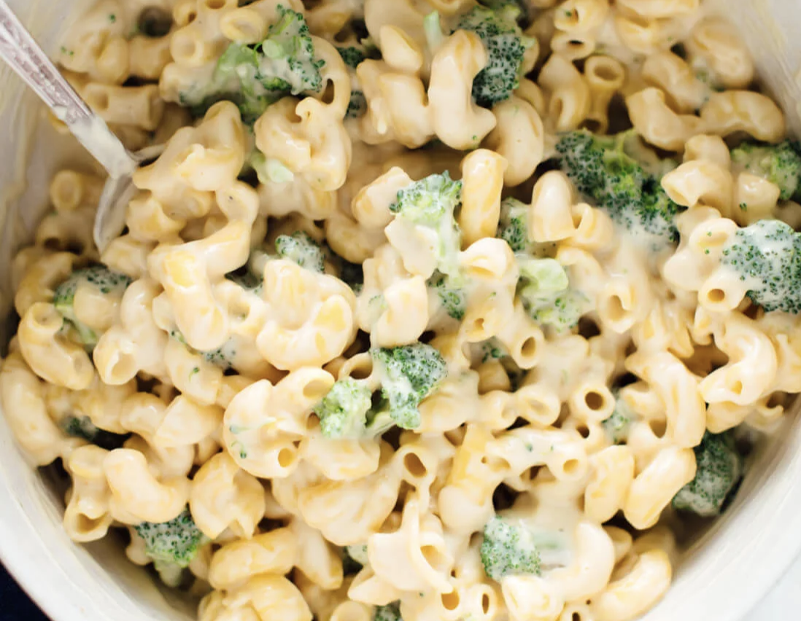
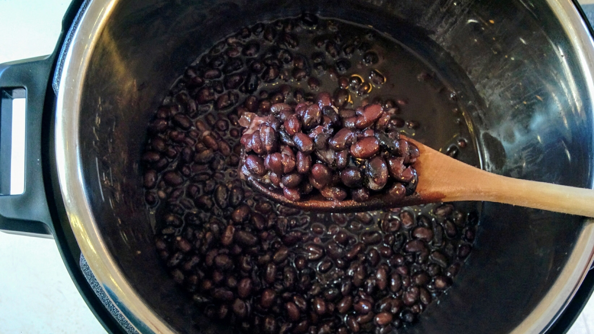

recipes
coconut curry lentil soup from vegangela

creamy mac and cheese from cookie and kate

black beans from kitchen treaty
creamy vegan ramen from serious eats
vegan brioche donut from holy cow vegan
vegan ramen from minimalist baker
southwest tofu scramble from minimalist baker
john oliver
pictures of sunsets
jackie aina
john oliver
pictures of sunsets
previous
go home